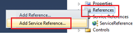
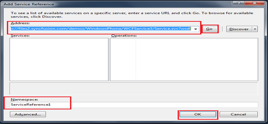

Data Binding using WCF enables to populate the items into the AutoComplete control from a website. It is done by creating a WCF service and by including the ServiceReference into the application
Note: To know how to Host a WCF service kindly refer the section “5.1 How To Create WCF Data Binding Service”
Once the Service is successfully hosted onto the internet a link to download the configuration files and codes to implement the data communication will be displayed.
The steps to configure WCF to Implement in AutoComplete Control are shown as follows:
Note: This sample is shown using List<> as the data type since the same has been used during the deployment of the SyncFusion’s Service application
The present link of SyncFusion’s Service Reference is:
http://files2.syncfusion.com/demos/WindowsPhone/WCFService3/Service.svc?wsdl
1. As explained in the previous examples, open the sample in Visual Studio
2. Right click Reference tab in Solution Explorer and select Add Service Reference

Figure 15: Add Service Reference
3. Enter the above link in the url tab, name the service and click OK

Figure 16: Adding the url and configuring the service reference
4. Once the service reference is being configured into the application go to the code page which contains the AutoComplete control and include the following namespaces:
|
[C#] using SampleBrowser.ServiceReference; using System.ServiceModel; using System.Runtime.Serialization; using System.Collections.ObjectModel;
|
5. Add the following code to populate the AutoComplete Control:
|
[C#] class autocomplete:usercontrol
{ ImyserviceClient channel = new ImyserviceClient("BasicHttpBinding_Imyservice"); // channel is created for commumication, //ImyserviceClient is the class used by sync fusion in the service
autocomplete() {
channel.getautoCompleted += new EventHandler<getautoCompletedEventArgs>(channel_getautoCompleted); // event handler to invoke once // the data in fetched
channel.getautoAsync(); // function to fetch the data } public static List<string> word = new List<string>();
void channel_getautoCompleted(object sender, getautoCompletedEventArgs e) { word.Clear(); foreach (string i in e.Result) { word.Add(i); // add the data one by one into the list-word
}
this.autoComplete1.CustomSource = ServicesClass.word; // populate the autocomplete contorl }
}
|
Note: Other factors such as timeout, endpoints while creating a service, binding option has to be configured as per the requirement. The above WCF sample procedure is just to brief out the possibilities of binding the data dynamically